Round 11, the final F set: 120 frames, Launch (phase 1) then Later (phase 2). Dark is the default; frames ending -light are the light twins. See README.md and notes.md beside this file.
1 · Launch (phase 1)
Everything the team builds first: the kit and every in-app screen, plus the notifications whose Yes and No open the hold sheet. No season row, streak line, Follow control, widget or Live Activity appears here; each launch frame that showed one is redrawn without it (notes.md says why for each).
Kit and tokens
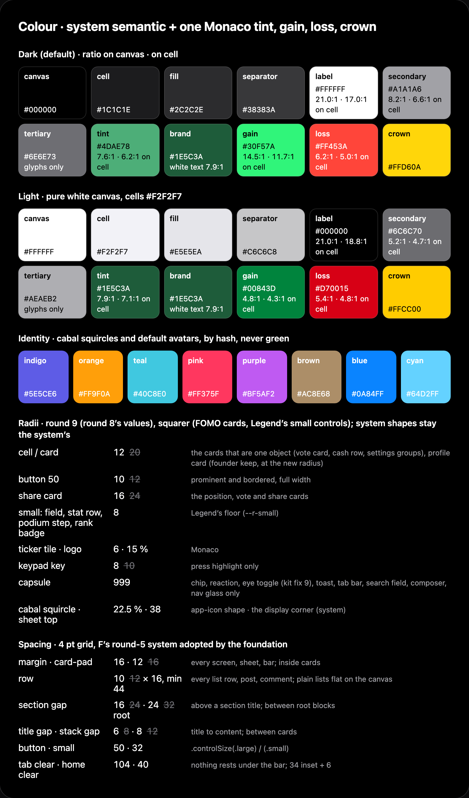
01-tokens · Colour, radii and spacing: F’s kit tokens (round-8 density and radii, unchanged). Dark first; light is pure white with colour as accent; identity colours for crests and default avatars, never Monaco green.
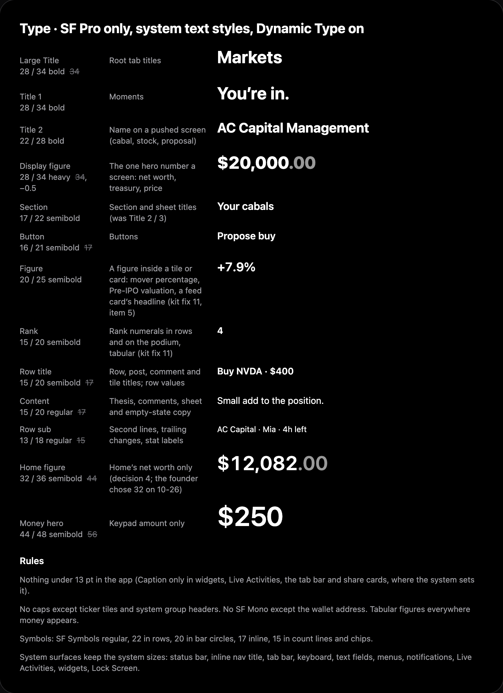
01-tokens-type · Type: SF Pro only, the round-8 content scale. Home’s figure is its own token, 32 / 36 semibold (decision 4, the founder’s choice of 10-26); the keypad keeps the 44 money hero.
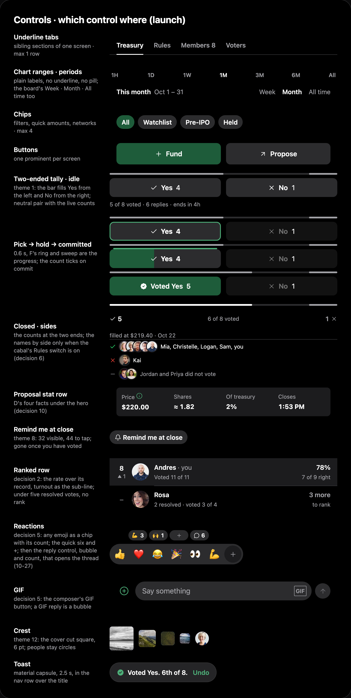
01-tokens-controls · Launch controls: underline tabs, chart ranges and the board’s Week · Month · All time as plain labels, chips, buttons, the two-ended tally and its hold, the closed tally with the sides row (decision 6), D’s proposal stat row (decision 10), Remind me at close, the ranked row with the rate over its record (decision 2), any-emoji reactions with the quick six and + and then the reply control (10-27), the composer with GIF (decision 5), the crest and the toast. The phase-2 rows (Follow, streak row, season row) moved whole to 01-tokens-later.
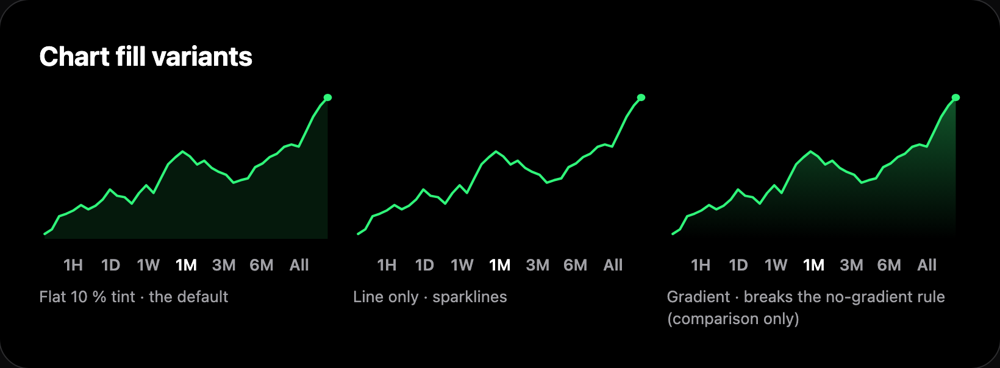
01-chart-variants · Chart fill: the flat 10 % tint ships, full width on the canvas; the gradient is drawn only as the labelled variant that breaks the no-gradient rule.
Home
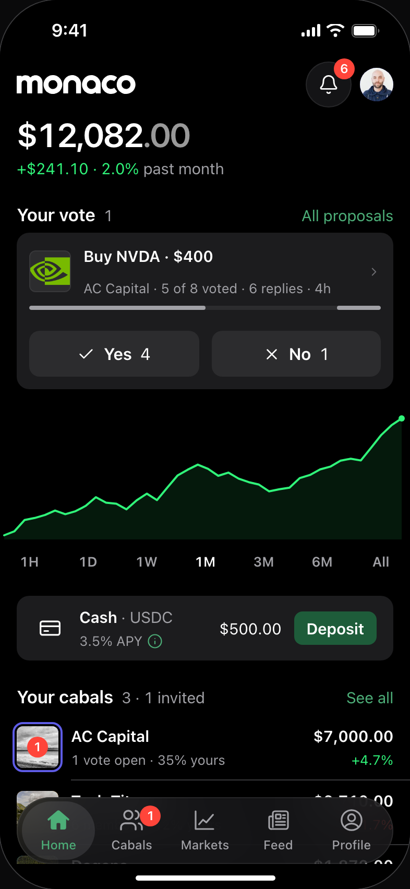
02-home-dark · HOME · launch. The wordmark is the title, the bell carries the Catch up count (6), the photo opens Profile. The net worth at 32 (decision 4, the founder’s choice) with the month’s change. Six blocks (decision 11): Your vote (the proposal card: status line, the two-ended tally with live counts, Yes never pre-highlighted), the chart, Cash with its 3.5% APY, Your cabals led by crests, the leaderboard row, From your cabals (below the fold: each row ends its sub-line in the reply glyph and count, 05-feed comments). The streak line under the card is gone (phase 2).
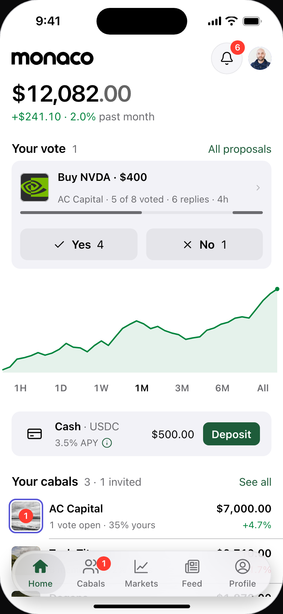
02-home-light · Home, light twin on pure white: the same six blocks, the figure at 32.
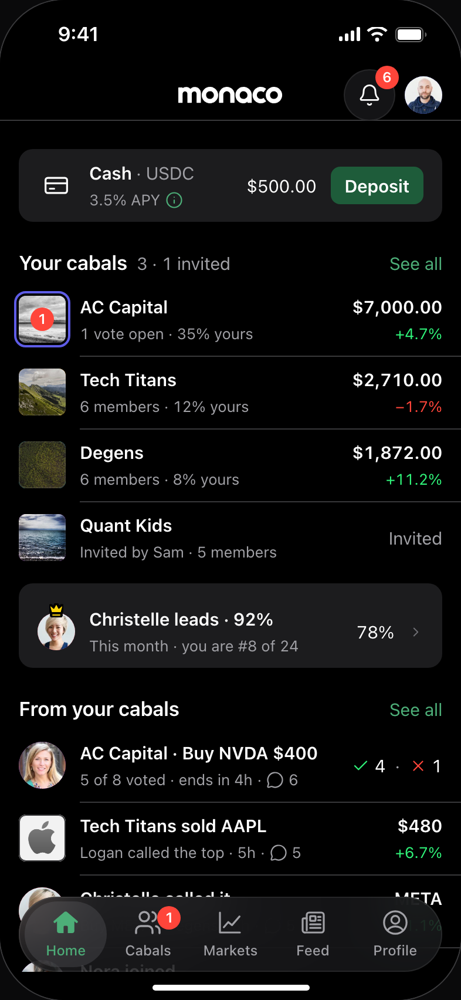
02-home-scrolled · Home scrolled: the wordmark becomes the inline title. Cash, Your cabals (AC Capital with its ring of duty, “1 vote open · 35% yours”), the leaderboard row (“Christelle leads · 92%”, this month you are #8 of 24, 78%), then From your cabals: each row keeps its two lines and ends the sub-line in the reply glyph and count (NVDA 6, the AAPL sale 5); the whole row opens the thread.
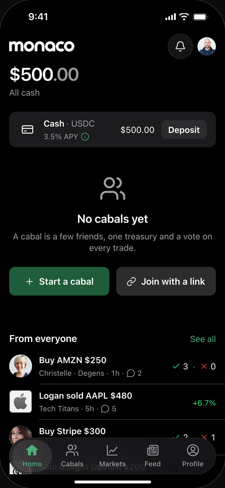
02-home-empty · Home, first use: no cabals yet, $500.00 cash, Start a cabal or Join with a link, then From everyone with live counts, each row’s sub-line ending in the reply glyph and count (Christelle’s Buy AMZN 2, Logan’s sale 5, Rosa’s Buy Stripe 4, Sam’s OpenAI buy bare); the whole row opens the thread. The month’s leader is further down. The bell has no badge: nothing waits on a new account (round-10 polish 4).
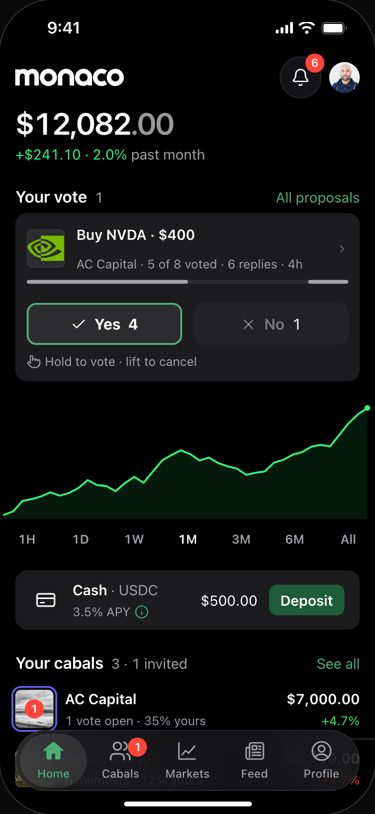
04b-hold-1-pick · Hold on Home’s card · pick: tap Yes, F’s 2 pt tint ring, the label goes bold, No steps back; the hint “Hold to vote · lift to cancel”. Haptic .selection; the impact generator is prepared on press.
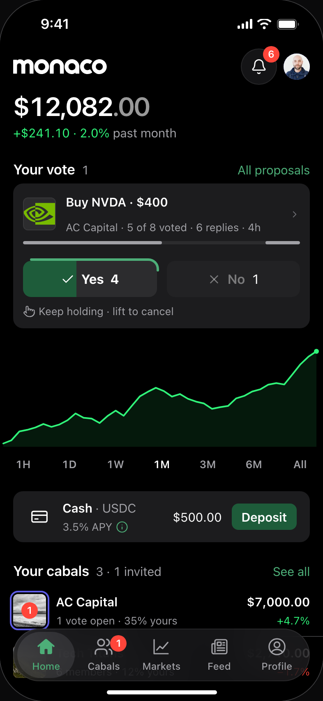
04b-hold-2-holding · Hold on Home’s card · holding at 40 %: the ring draws clockwise and the button fills left to right in brand over 0.6 s; lift early and it drains with no error.
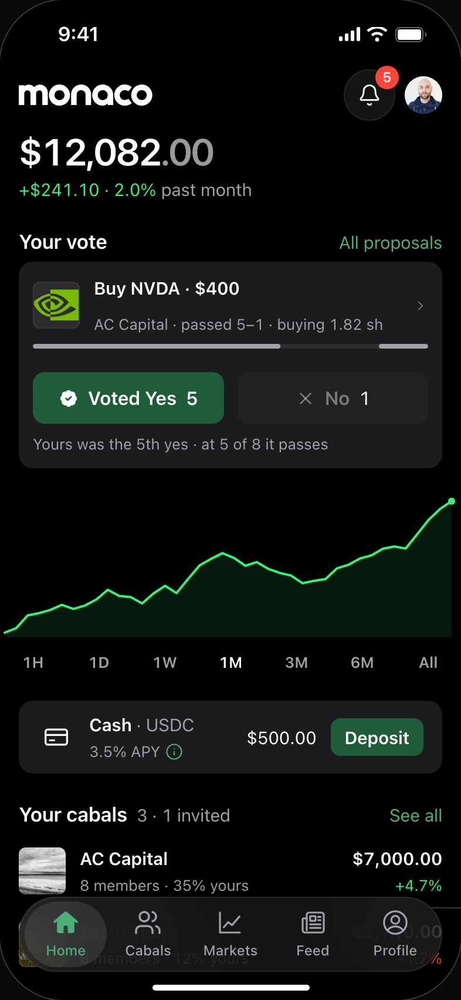
04b-hold-3-committed · Hold on Home’s card · committed: the seal stamps in (“Voted Yes 5”) and the vote passes at quorum (decision 14): the sub-line reads “passed 5–1 · buying 1.82 sh”, the hint says yours was the 5th yes. One medium impact. After 1 s the card collapses (12-toast).
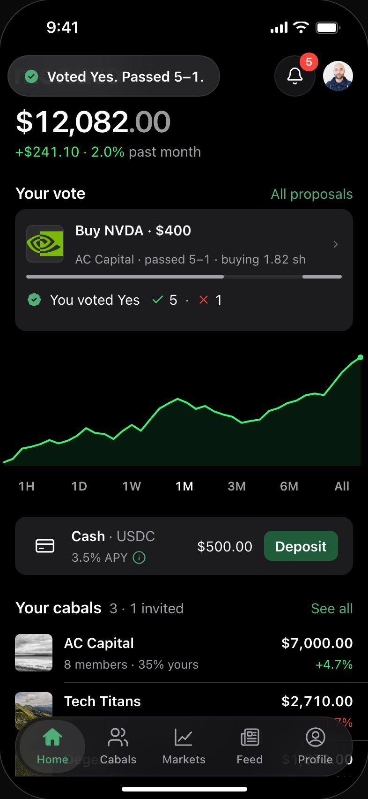
12-toast · The one toast: a material capsule in the nav row (“Voted Yes. Passed 5–1.”, 2.5 s) over the wordmark, clear of the figure. No Undo: this Yes settled the vote and the trade has started (the coordinator’s ruling until the founder answers; an ordinary vote’s toast keeps “6th of 8. Undo”, as the kit board draws it). Behind it Home’s card has collapsed to “You voted Yes · ✓5 ✕1”, AC Capital’s row reads 8 members (nothing open there now), From your cabals reads Passed 5–1, and the bell reads 5.
Cabals tab and the cabal page
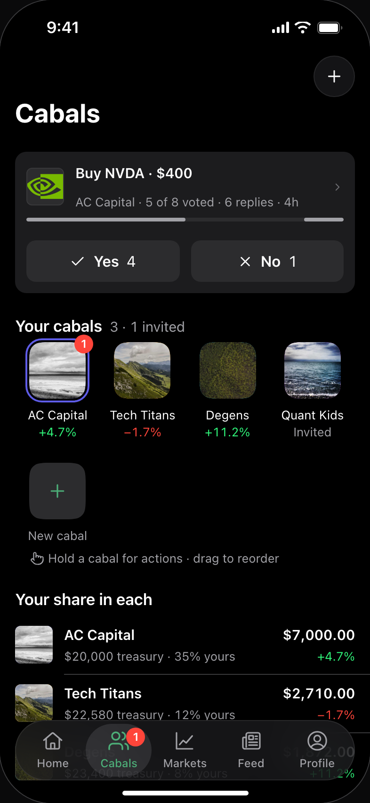
03-cabals-tab · CABALS TAB · the founder’s choice (10-26: “the old design”), kept as it was: the owed vote, the Home Screen grid of app icons, Your share in each. The season row under it is gone (phase 2).
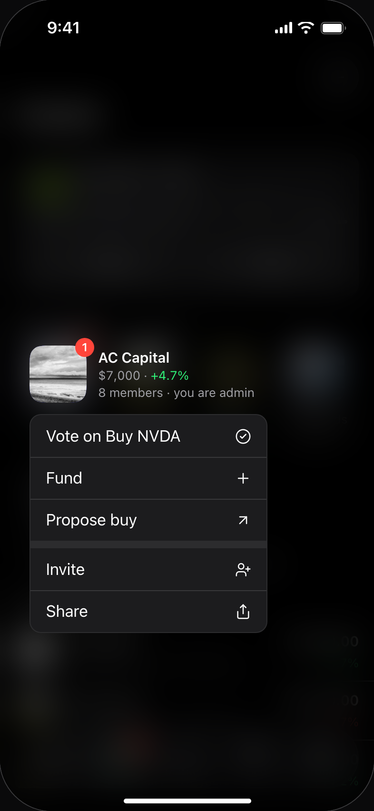
03-cabals-tab-menu · Cabals tab · long-press on AC Capital: the icon lifts on its own grid position, the blur, and the menu (Vote on Buy NVDA, Fund, Propose buy, Invite, Share). Haptic .medium on lift.
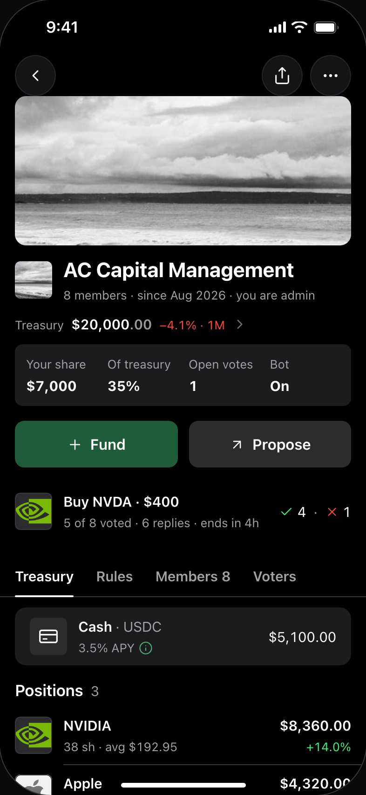
03-cabal-treasury · CABAL PAGE · Treasury. Cover, the 40 crest beside the full name (the only place the full name shows), Treasury $20,000.00 with −4.1% · 1M and its history chevron, the stat row (your share, of treasury, open votes, bot), Fund and Propose, then the open proposal as a row with its status line and live split. The streak row is gone (phase 2). Under the tabs: Cash with its APY, the positions, the trading bot and Cash out.
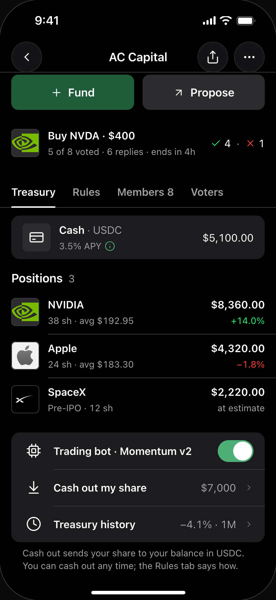
03-cabal-treasury-scrolled · Treasury scrolled to its real end (299 pt): the name is the inline title, the positions, the bot toggle and Cash out my share, the footnote on the 812 clearance.
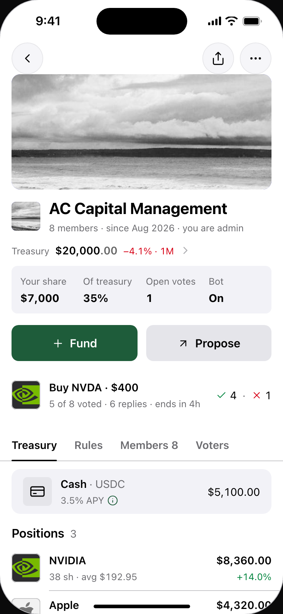
03-cabal-treasury-light · Cabal page, light twin.
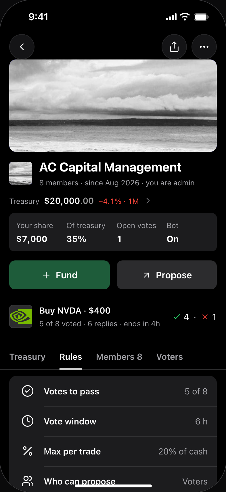
03-cabal-rules · Rules: votes to pass, the vote window, max per trade, who can propose, cash out, and new in round 11 “Show who voted what” (decision 6), off by default; the list runs on below.
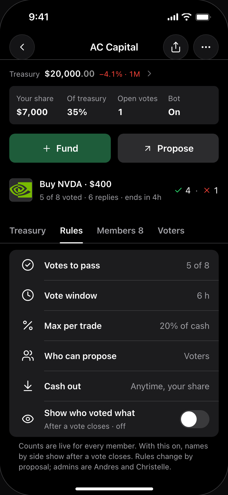
03-cabal-rules-scrolled · Rules scrolled to its end: all six rules and the footer. “Show who voted what · After a vote closes · off”. The footer says live counts show to every member in every state; the switch only adds names by side once a vote has closed, and like every rule it changes by proposal.
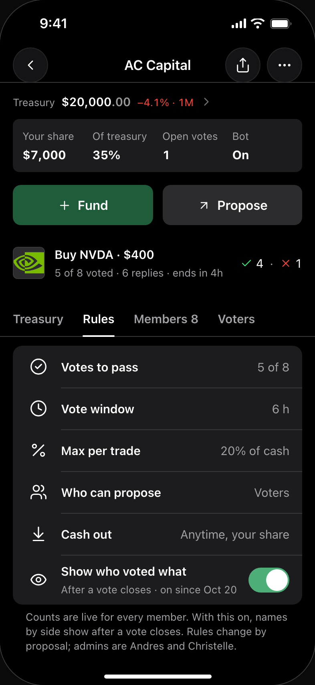
03-cabal-rules-sides · Rules with the switch on (decision 6): “After a vote closes · on since Oct 20”. From then on, each closed AC Capital proposal shows who voted which way (04-proposal-sides).
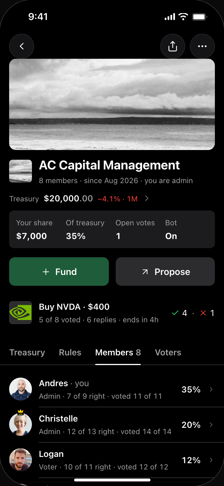
03-cabal-members · Members preview: five members, each with the role, the month’s right calls and turnout (“Admin · 7 of 9 right · voted 11 of 11”, decision 2’s figures), the share of the treasury; See all 8 and Invite.
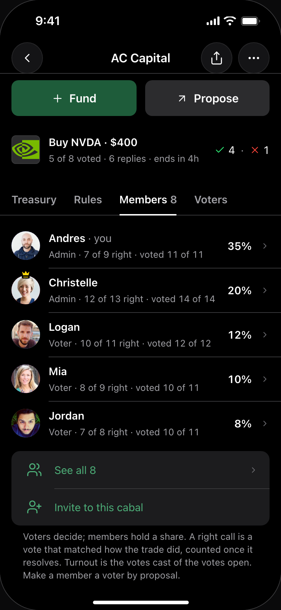
03-cabal-members-scrolled · Members scrolled to its end (309 pt): See all 8, Invite, the footer with what a right call is, on the 812 clearance.
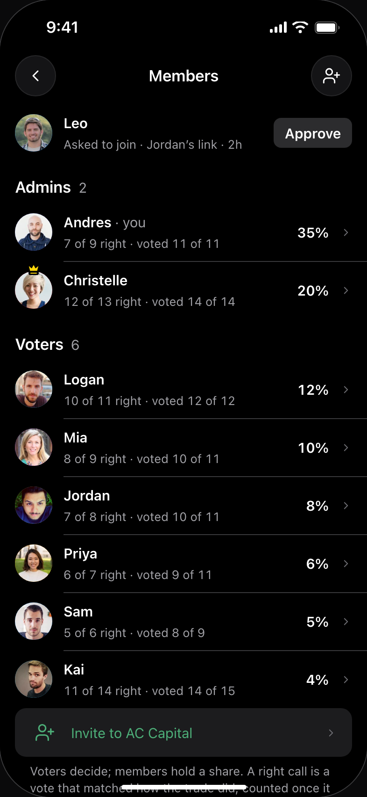
03-cabal-members-all · All members: Leo’s request first (asked to join through Jordan’s link, Approve; D’s pending row, borrow row 20), then Admins 2 and Voters 6, each with the month’s right calls and turnout, and Invite to AC Capital whole above the home indicator; the footer is one scroll down.
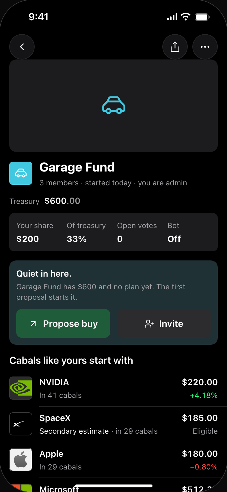
03-cabal-empty · EMPTY CABAL (borrow row 23): Garage Fund, started today with $600 and three members. An identity cover and crest with its symbol (no picture yet), the stat row with 0 open votes, “Quiet in here.” with Propose buy and Invite, then C’s “Cabals like yours start with”: four dense rows with how many cabals hold each (SpaceX with its secondary estimate).
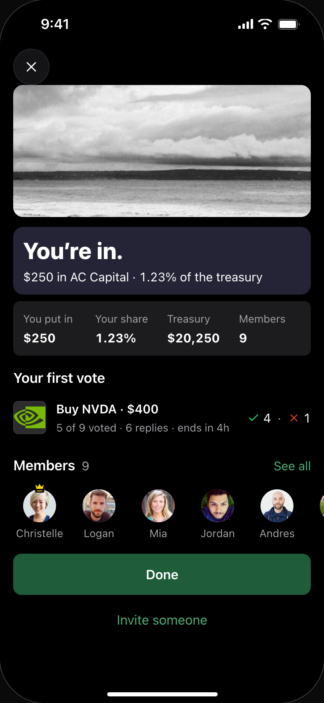
15-first-fund · After a first fund (§6.4), seen by the new member (Zoe): “You’re in.” on AC Capital’s tint, the stat row (you put in $250, your share 1.23%, treasury $20,250, members 9), your first vote with its status line (5 of 9 voted), the nine members as a photo strip, Done and Invite someone.
Proposal, the vote and the discussion
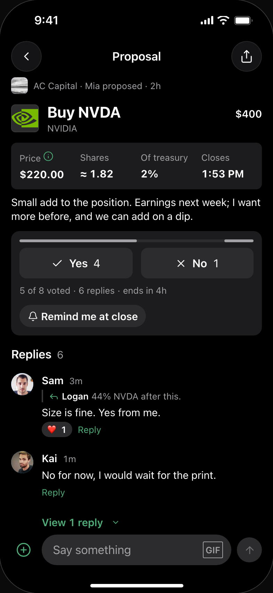
04-proposal-dark · PROPOSAL · launch. The crest line (“AC Capital · Mia proposed · 2h”), the NVIDIA logo, Buy NVDA as the title and $400 at row size, then D’s stat row (decision 10): Price $220.00 with its i · Shares ≈ 1.82 · Of treasury 2% · Closes 1:53 PM, then the thesis. The vote card: the two-ended tally with live counts, the status line, Remind me at close (Follow is phase 2). Replies rooted under it, the composer with ⊕, GIF and a quiet send until you type.
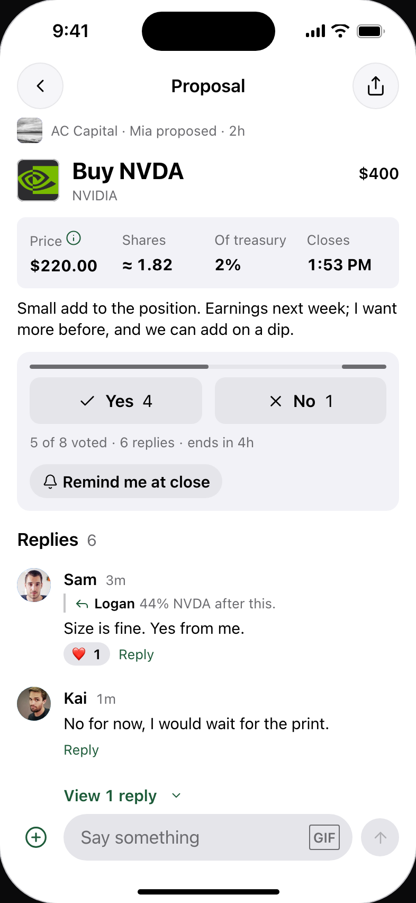
04-proposal-light · Proposal, light twin, with the stat row and the GIF button.
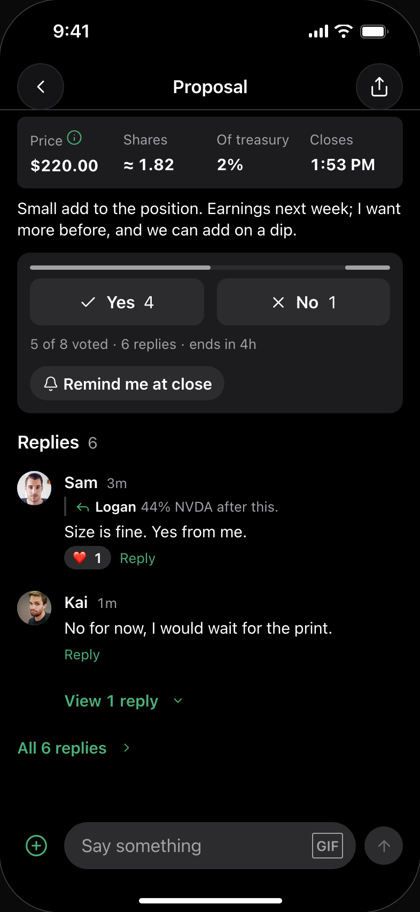
04-proposal-scrolled · Proposal scrolled to the end of its replies (sweep 1): the title row under the inline bar, the stat row and the thesis, the vote card, Sam’s and Kai’s replies, View 1 reply and All 6 replies whole above the composer. A screen with a docked composer keeps the composer’s clearance (92) as its list’s end inset, so the last reply control always comes clear of it.04-vote-idle · VOTE · idle: nothing pre-highlighted, both counts live (✓4, ✕1); the bar shows 4 yes from the left, 1 no from the right, 3 not voted in the middle.
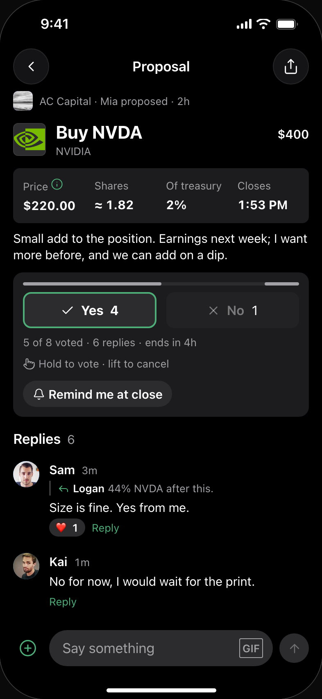
04-vote-picked · VOTE · picked: tap Yes, the tint ring, bold label, No steps back, the hint “Hold to vote · lift to cancel”. Haptic .selection.
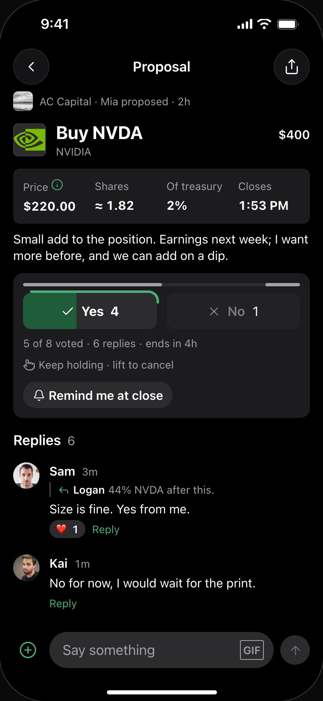
04-vote-holding · VOTE · holding at 40 %: the ring and the sweep over 0.6 s; lift to cancel.
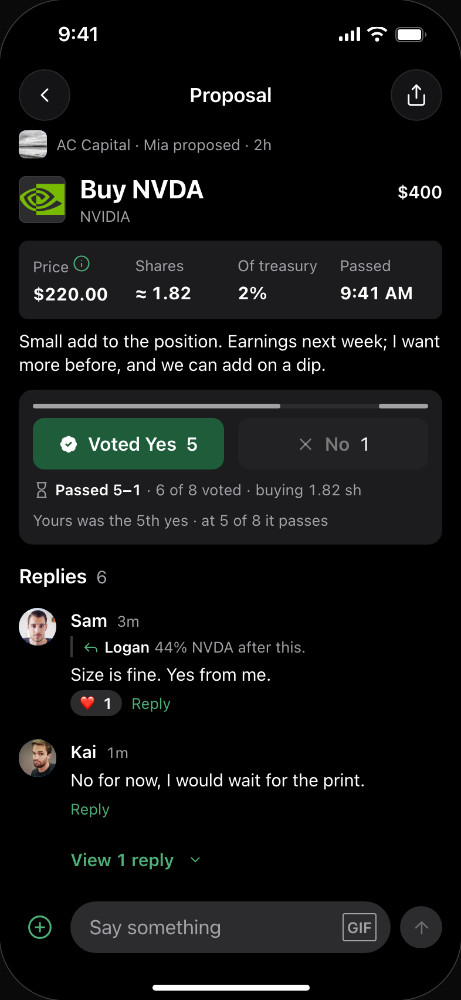
04-vote-committed · VOTE · committed, and with it the vote settles (decision 14): Andres’s Yes is the fifth of the eight, so at 5 of 8 it passes on the spot. One medium impact, the seal (“Voted Yes 5”), the bar grows, the status line turns to the executing state (kit fix 17: the neutral hourglass, “Passed 5–1 · 6 of 8 voted · buying 1.82 sh”; the green seal waits for the fill), the hint says yours was the 5th yes, and the stat row’s Closes becomes Passed 9:41 AM. No Change: the trade has started. It fills the same minute (04-proposal-passed).
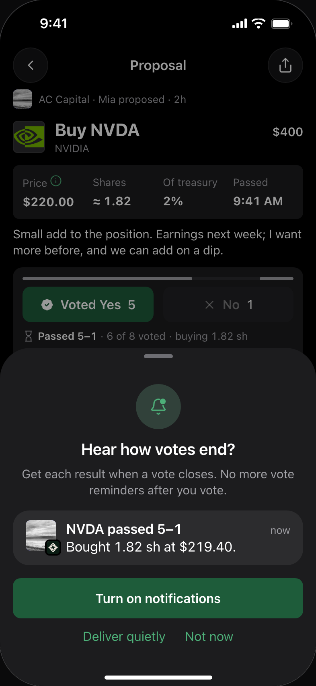
19-permission-sheet · PERMISSION, right after the first vote (theme 8): “Hear how votes end?”, “Get each result when a vote closes. No more vote reminders after you vote.”, a sample of the result push (“NVDA passed 5–1 · Bought 1.82 sh at $219.40.”, the one this vote sends now), Turn on notifications, Deliver quietly, Not now. Behind it the proposal your Yes just passed, still executing (the hourglass until the fill).
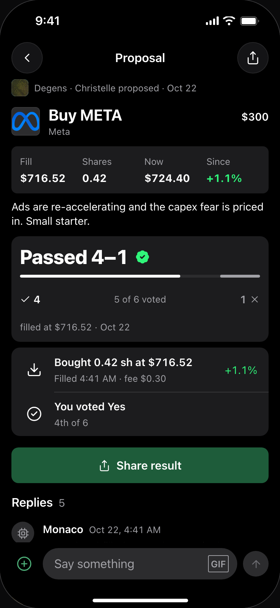
04-vote-closed · VOTE · closed, Degens’ Buy META: “Passed 4–1” is the one display figure; the stat row is the result’s (Fill $716.52 · Shares 0.42 · Now $724.40 · Since +1.1%); the tally settled, the status line, the fill and your vote, Share result, the rooted replies.
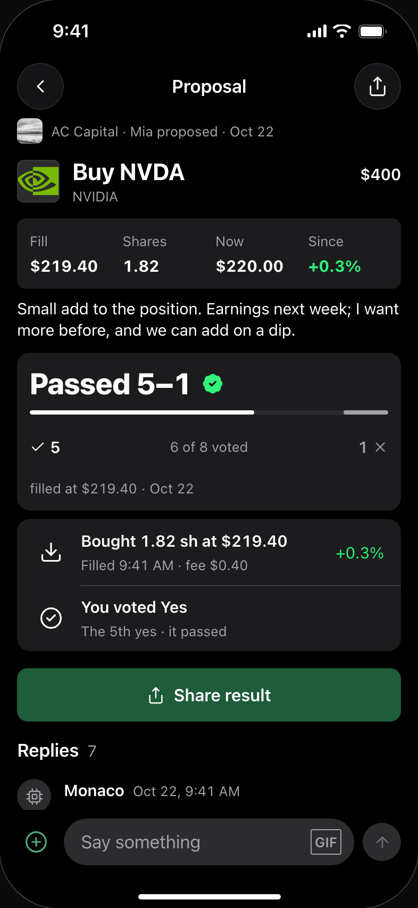
04-proposal-passed · Closed, passed, with AC Capital’s Rules switch off (the default): “Passed 5–1” (it settled at quorum, decision 14, on Andres’s fifth yes at 9:41 AM), the result’s stat row (Fill $219.40 · Shares 1.82 · Now $220.00 · Since +0.3%), the settled tally with 6 of 8 voted, the fill and your vote (“The 5th yes · it passed”), Share result, the replies. Counts only, no names.
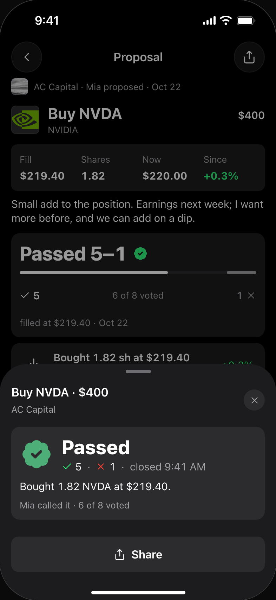
15-passed · §6.1 Passed: the result card rises over the closed proposal: the seal, “Passed”, ✓5 ✕1 closed 9:41 AM (at quorum, decision 14), “Bought 1.82 NVDA at $219.40.”, “Mia called it · 6 of 8 voted”, one Share. No names by side: AC Capital’s Rules switch is off. Haptic .success.
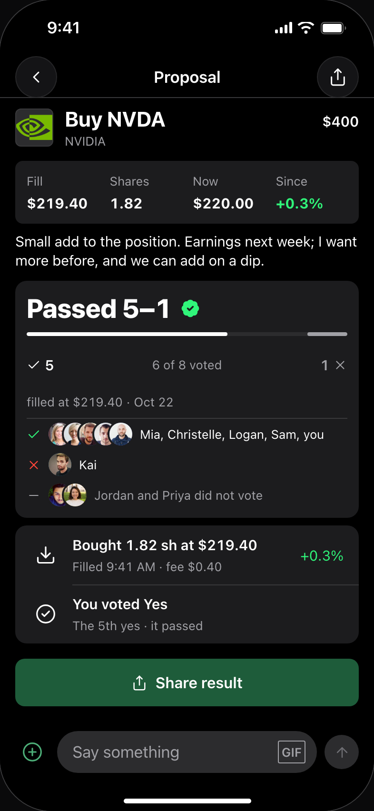
04-proposal-sides · Closed, with the Rules switch on (decision 6): under the settled tally, D’s reveal row: ✓ Mia, Christelle, Logan, Sam, you · ✕ Kai · – Jordan and Priya did not vote. Names show only after close; the live counts showed all along. Scrolled so Share result rests whole above the composer; the replies run on under it.
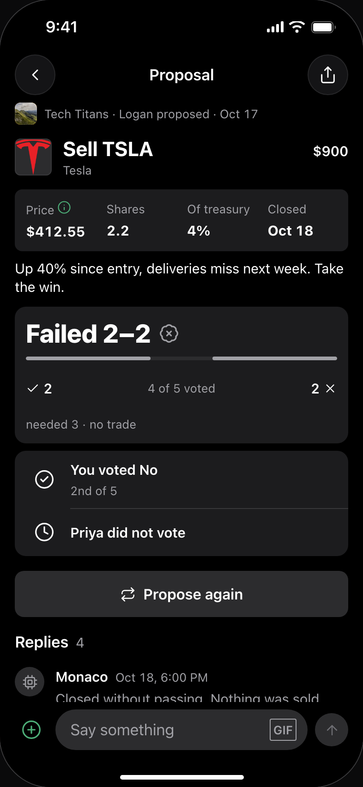
04-proposal-failed · Closed, failed: Tech Titans’ Sell TSLA, “Failed 2–2”, the stat row (Price · Shares 2.2 · Of treasury 4% · Closed Oct 18), the even tally (4 of 5 voted), “needed 3 · no trade”, your No, Priya did not vote, Propose again, the replies.
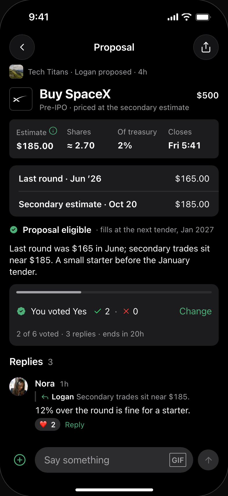
04-proposal-preipo · Pre-IPO proposal: Tech Titans’ Buy SpaceX $500, the stat row with the Estimate and its i (≈ 2.70 sh, 2% of treasury, closes Fri 5:41), the last-round and secondary-estimate ledger, “Proposal eligible · fills at the next tender, Jan 2027”, the thesis, then your vote: the bar, “You voted Yes” with the live split (✓2 ✕0) and Change, the status line; the replies.
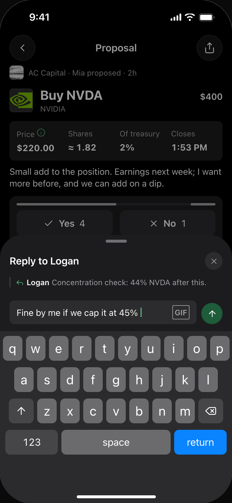
04-reply-composer · REPLY · the one-line composer grows into a half sheet above the keyboard with the quote of what you answer (“Logan · Concentration check…”), the text, GIF inside the field at its trailing end (the same Comments/CommentComposer as 05-post-reply), and Send. Drag down returns to the one line.
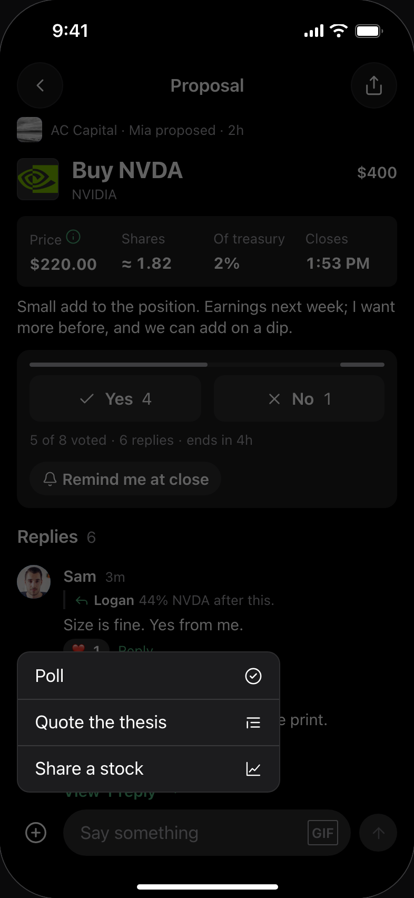
04-composer-menu · COMPOSER ⊕ MENU (C’s, borrow row 4): Poll, Quote the thesis, Share a stock. No Photo: chats take no image uploads at launch (founder 10-27); text and GIFs (GIPHY, not an upload) stay in the field itself.
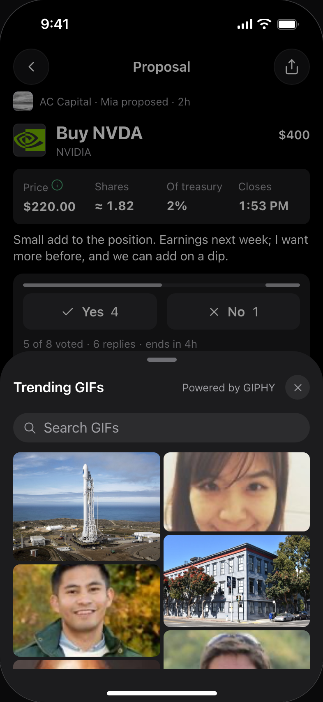
04-gif-sheet · GIF SHEET (decision 5): the GIF button opens a half-height sheet: Trending GIFs first, a search field, the provider’s attribution in the header where its terms require it (“Powered by GIPHY”). Tap a GIF to send it as a reply.
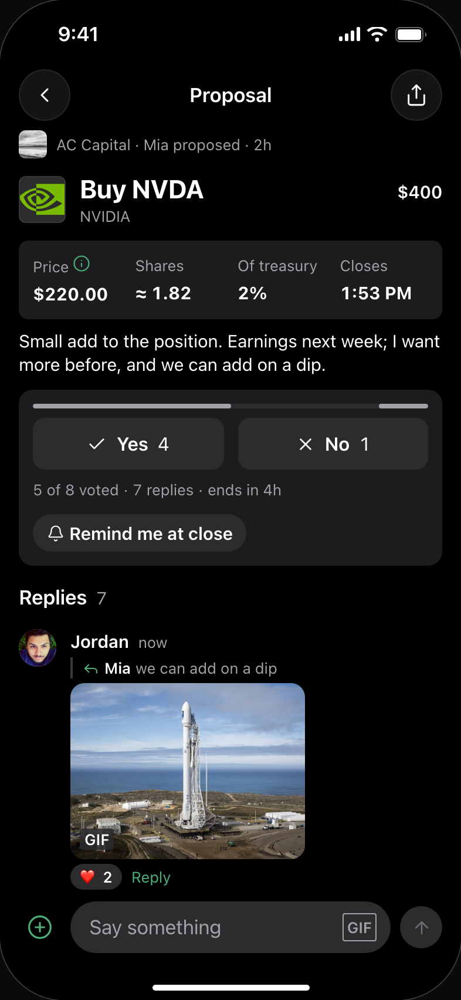
04-gif-reply · A GIF REPLY (decision 5): Jordan answers Mia’s “add on a dip” with a GIF, drawn as a bubble with the GIF in the reply’s place (quote, its reaction chips and Reply as any reply). Replies 7.
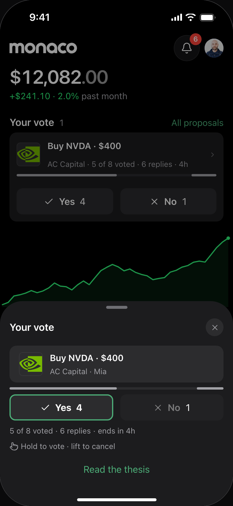
14-hold-sheet · THE HOLD SHEET, opened by Yes or No on a notification or a share link: the proposal row, the tally with your side picked, the status line, the hint; you still hold to commit.
Feed and reactions (Feed A)
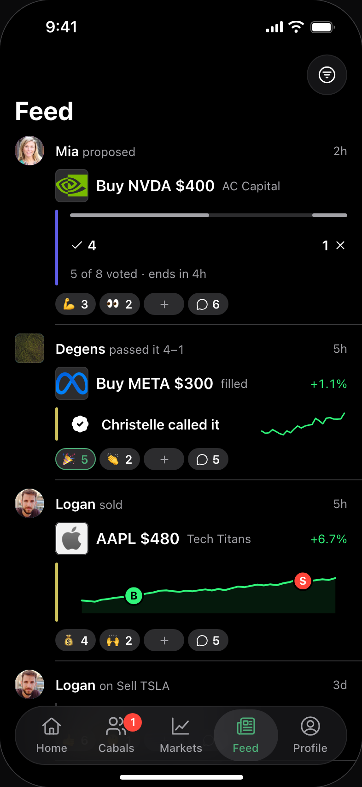
05-feed-A · FEED A · the timeline (decision 12). Each post: who and when, the asset line led by its 36 logo, the ticker and amount at Headline 17 (the cabal and the change keep their size), then its reactions, the reaction chips 24 tall (emoji and count at 13, 4 apart), each 44 × 44 to tap, and last the reply control (bubble.left and the count): Mia’s proposal (6), Degens’ passed post with Christelle called it (5), Logan’s sale with its B and S markers (5). The count is said once a card: the status line keeps turnout and deadline (“5 of 8 voted · ends in 4h”). A proposal or a result opens its proposal page at the replies, composer focused; any other post opens its own page (05-post). Reactions: any emoji chip, + opens the quick row.
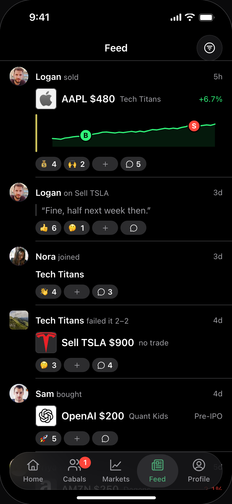
05-feed-A-scrolled · Feed A scrolled: resting on a post boundary under the inline title (Logan’s sale); each asset line led by its 36 logo, the ticker and amount at Headline 17 and the reaction chips 24 tall (emoji and count at 13, 4 apart), each 44 × 44 to tap; each post’s reply control after its +: Logan’s sale 5, Nora joined 3, the failed TSLA vote 4; Logan’s quote on Sell TSLA (a reply in that vote’s thread, nobody has answered it) and Sam’s OpenAI buy carry the bare bubble (no count when there are none); Sam’s OpenAI buy ends on the tab bar’s edge, its reactions whole above it, and Priya’s sale runs on under the glass.
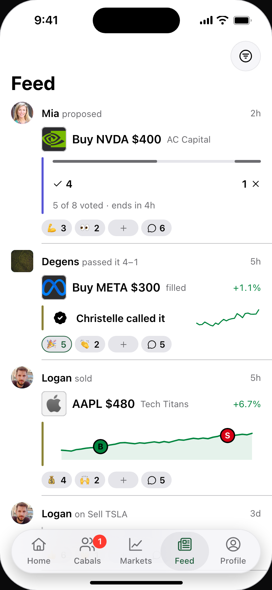
05-feed-light · Feed A, light twin: the 36 logos, the Headline ticker lines, the 24 reaction chips and the reply control on every post.
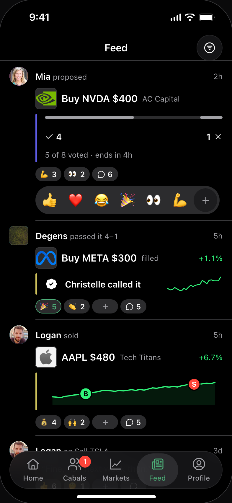
05-reactions · REACTIONS · the quick row (decision 5): scrolled to Mia’s post at the bar, tapping + on it opens six common emoji and + in place (the reply control stays after the chips, which are 24 tall); + opens the full picker (05-emoji-picker). Haptic .selection.
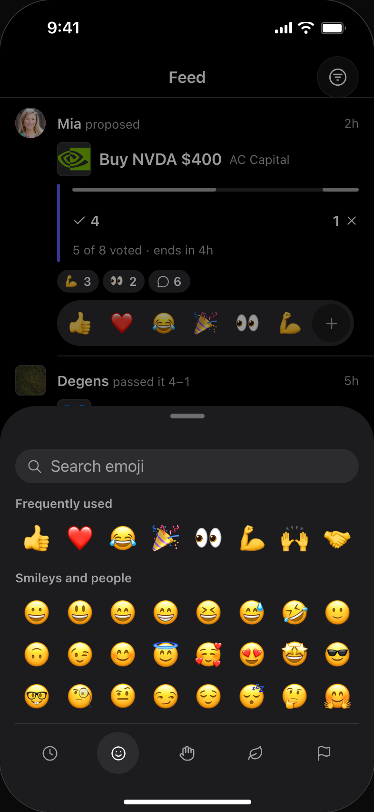
05-emoji-picker · EMOJI PICKER (decision 5): + opens the system-style picker as a half sheet: search, Frequently used, Smileys and people, the category bar. Any emoji becomes a chip with its count.
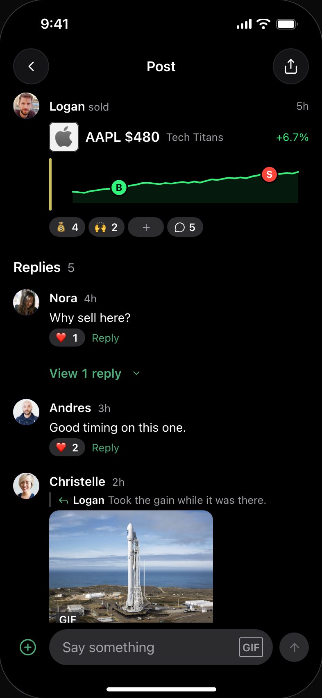
05-post · POST PAGE (Feed comments, 10-27) · any post that is not a proposal or a result opens here: tap the post or its reply control. Logan’s AAPL $480 sale in Tech Titans (+6.7%, 5h) as Feed A draws it, with its chart, its reactions and the reply control (5); then Replies 5, rooted as the proposal draws them: Nora’s question with View 1 reply (Logan’s answer, folded one indent), your reply, Christelle’s GIF reply quoting Logan (the quote jumps to it and unfolds the branch), Sam’s reply to you. Each reply’s reactions are small chips on its meta line, one per emoji used with its count (Christelle’s GIF 😂 3 ❤️ 1; none on Sam’s, which has none), then Reply; a chip toggles yours, double-tap adds ❤️, a long press opens the quick six and + (05-comment-actions). The composer docked with ⊕ and GIF, and the replies run on under it. Anyone who can see the post replies here.
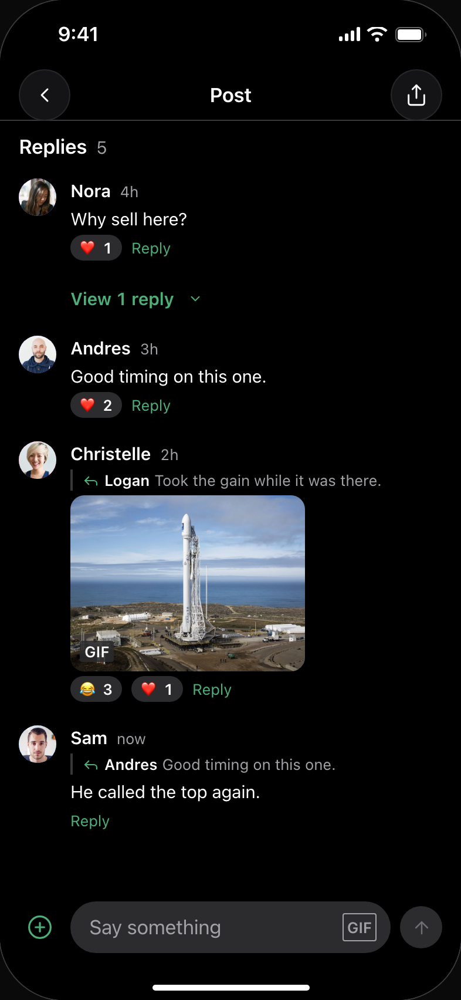
05-post-scrolled · Post page at the end of its replies: Replies 5 at the bar, Nora, View 1 reply, yours, Christelle’s GIF (😂 3 ❤️ 1), then Sam’s “He called the top again.” (quoting you, now, no reactions yet) ending 40 above the composer; the list keeps the composer’s clearance as its end inset.05-post-reply · REPLY FROM THE FEED · the reply control on Logan’s sale opens the composer as the half sheet over the Feed, the keyboard up: “Reply to Logan”, the post quoted on top as the post draws it (its 36 logo; Logan sold, then AAPL $480 · Tech Titans · +6.7%), the text, GIF inside the field, Send. Sent, the reply lands at the end of the post’s thread and the chip counts it; drag down to dismiss.05-comment-actions · LONG-PRESS A REPLY (haptic .medium) · the page blurs and Nora’s reply lifts where it rests, on its cell (❤️ 1); the quick six and + above it (any emoji, as on posts; each 44 to tap), the menu under it: Reply, Copy, Report. The emoji picked lands as a chip on the reply’s meta line, as Christelle’s 😂 does. On your own reply Delete takes Report’s place.05-post-public · PUBLIC PROPOSAL · from the quiet Feed’s From everyone: Maya’s Buy AMZN $250 in Pilates, a cabal you are not in. The page reads as the proposal does (stat row, thesis, the live tally ✓3 ✕0 with 3 of 7 voted · 2 replies · ends in 23h), without the vote buttons or Remind: “Pilates members vote”. Replies read in full (Zoe, Maya’s answer one indent); reactions are open: each reply’s emoji chips (Zoe ❤️ 3, Maya ❤️ 1) toggle, a long press opens the quick six and +; no Reply. In the composer’s place one line, “Members of Pilates reply here” (10-27 default).05-feed-empty · Feed, a quiet week in your cabals: Find people or Start a cabal, then From everyone: public cabals you are not in (Pilates, Night Shift, Big Ballers, Quant Kids), each asset line led by its 36 logo, the ticker and amount at Headline 17. Every post has + and the reply control in the 24 chips (reactions are open to anyone who sees it): Maya’s Buy AMZN 2, Rosa’s Buy Stripe 4; their status lines keep turnout and deadline. Maya’s opens 05-post-public.
Markets and the stock (Markets A in F’s order, the founder’s choice)
06-markets-A · MARKETS A · F’s order, the founder’s choice (Watchlist · Pre-IPO · Moving today): search, four chips, the watchlist with a Monaco fact on every row and sparklines (SpaceX is left to the Pre-IPO section under it), then Pre-IPO (what members can buy only here) with the secondary estimate and eligibility.06-markets-A-scrolled · Markets A, F’s order, scrolled to its end: Amazon’s row 8 under the inline bar, Pre-IPO whole, then Moving today as a sideways strip of five cards (AMD, NFLX and TSLA whole, AMZN peeking at the edge, MSFT one swipe away), each figure inside its card; the list’s end inset leaves the tiles 40 above the glass tab bar.06-markets-search · Search, typing “micro”: five matches with logos where the asset set has one (Micron, Super Micro and Microchip keep the kit’s ticker tile), sparklines, the price over the day’s change.06-markets-held · Markets · Held: what your cabals own, “$19,627.71 across 3 cabals”, each holding with its cabal and size; SpaceX valued at the estimate, never a percent.07-stock-dark · STOCK · NVIDIA: the logo, $220.00 with +$8.82 · 4.18% today, the full-bleed chart with plain range labels, the favourite filled (NVIDIA leads your Watchlist) and share, Propose buy / Propose sell, In your cabals (the position and the open proposal), Market stats with its i.07-stock-light · Stock, light twin.07-stock-preipo · PRE-IPO STOCK · SpaceX: the company photo with its logo, “Private · priced per round, not live”, the secondary estimate $185.00 as of Oct 20 with its i, the last round and the estimate side by side, Proposal eligible, the step chart of rounds with the estimate dashed.07-stock-preipo-scrolled · SpaceX scrolled: the estimate’s ledger row under the bar, Proposal eligible, the step chart, Propose buy / sell, In your cabals (AC Capital’s holding at the estimate, Tech Titans’ open Buy $500), Round stats (valuation, last round, $10 minimum, quarterly tender, next tender Jan 2027) and the footnote.08-review-sheet · PROPOSE BUY · review sheet (425 of 426): NVIDIA and $400, AC Capital with its cash and window, Change, the optional note, the stat row (shares, price, of treasury, to pass), one Send to vote.08-review-sheet-preipo · Pre-IPO review sheet (403 of 426): SpaceX at the estimate with its i, AC Capital, the last round and the estimate side by side, Send to vote.12-info-sheet · i-SHEET over the stock page (Market stats’ i): two sentences of fine print, three facts (source CoinGecko, updated 9:41 AM, delay up to 1 min), OK. Never a popover.
Money in and out (the founder’s keypad)
09-fund-cabal-empty · FUND · empty: the founder’s Phantom keypad. The source pill (AC Capital’s crest, Cash $500.00), grey $0, one line (“From your cash · your share 35%”), the four quick chips, plain keys, the held slot “Enter an amount”.09-fund-cabal · Fund · typed $250: “your share 35% → 36%”, Fund $250 in the slot. Haptic .selection per key.09-fund-cabal-invalid · Fund · invalid $650: the chips give way to one grey line in the same box (“$500.00 available · $150.00 over”), no button, the slot says “Up to $500.00”; the note above keeps its usual context. Haptic .error once.09-fund-cabal-settled · Fund · settled: the button becomes the check, “$250 to AC Capital”, “Added just now · your share is now 36%”; the pill’s cash is now $250.00; keys and chips dim. One .success haptic after the server accepts.09-withdraw-empty · WITHDRAW · empty: the same component; the pill is Cash with $500.00, the address with paste and scan inside the field, the network chips (multichain stays; Solana is picked), “Fee $0.50 · USDC on Solana”. Max fills $499.50, the cash less the fee.09-withdraw · Withdraw · typed $120: “≈ 120.00 USDC · fee $0.50”, Withdraw $120.09-withdraw-invalid · WITHDRAW · invalid $650 (round-10 polish 1): the pill keeps the source balance (Cash $500.00); the chips give way to “You can send $499.50 · $150.50 over”, because the $0.50 fee comes on top of the amount; no button, “Up to $499.50”. Max on the empty and typed states fills the same $499.50. The address and network stay readable above. Haptic .error once.09-withdraw-settled · WITHDRAW · settled (round-10 polish 1): “$120 to 9xQe…VFin” as the check, “Sent just now · arrives on Solana in about a minute”, the pill’s cash now $379.50 ($500 − $120 − $0.50 fee); keys dim.
Profile, invite and share
10-profile-own · PROFILE · yours: the founder’s rounded card unchanged (photo with edit badge, name, handle, bio, Positions with its only-you i, P&L · 1M), the followers line, then the month’s standing (78% right calls this month · 7 of 9 · #8 of 24, decision 2, where the phase-2 season row was), the cash row, Cabals 3 / Activity, AC Capital and Tech Titans whole down to the docked Deposit’s shelf.10-profile-own-scrolled · Profile scrolled to its end: the card’s photo and name are under the inline title, the bio is the first line; the followers line and the month’s standing, the cash row, then all three cabals and Quant Kids’ invitation whole above the Deposit shelf.10-profile-other · Someone else’s profile: Christelle, crown as the month’s #1, percent P&L only, Right calls · 1M 12 of 13 (decision 2), “2 in common” (cabals you share), one Follow (following a person, not the phase-2 Follow of a proposal), Cabals / Activity: her votes without their side, a proposal, a reply, “Topped the board · September”.10-profile-other-cabals · Someone else · Cabals 3: her three cabals, the two you share marked “You are both in”, her share of each.11-invite-sheet · INVITE (416 of 426): the cabal is the invite: cover band, crest, name, members and treasury, “Andres invited you” with who is in, the open proposal with its live split; Share and Copy link, QR beside the gear.18-invite-landing · INVITE LANDING, before an account: the wordmark as the title, the cover, the 56 crest with the cabal’s name (“Cabal · 8 members · since Aug 2026”), who invited you and who is in, Treasury · 1M · Turnout, the open proposal read-only (“Join to vote” between the live counts), Join AC Capital docked. The Season 3 facts are gone (phase 2).11-share-A · SHARE A · a position (decision 12): AC Capital’s NVDA, four trades on the chart at their real prices (round-10 polish 5: the Aug 20 sell at $214.10 sits above the Sep 30 buy at $196.75, and the line ends higher at $220.00), the sell and the last add with dated callouts, +$1,027.90 and +14.0%, Size · Avg. entry · Current, the green footer with the code. Replay, the three eyes, Card 4:5 · Square · Story · Sticker, Share and Copy image docked.11-share-B · SHARE B · a passed proposal (decision 12, borrow rows 13 to 15): Christelle’s photo with Degens’ crest and “Christelle called it” as the header, two markers: the seal itself (checkmark.seal.fill, A’s seal) where the vote passed ($709.80) and B where it filled ($716.52); +1.1% since the fill (P&L $ off, so the percent is the figure).11-share-C · SHARE C · your share of a cabal: your photo with AC Capital’s crest on its corner, +$312.40 and +4.7%, Share · Funded · Now; Buy/Sell and Code off, so the card has no markers and no code.11-share-card-vote · The open-vote card, square: the crest, Buy NVDA, $400, the live count and turnout; the link opens the hold sheet for members and the proposal for everyone else.11-share-sticker · SHARE · Sticker, all eyes off: crest and cabal, NVDA, +14.0% and the wordmark on a transparent background for Stories.11-share-sticker-on · Sticker, all eyes on: the dollar P&L, “long since Jun 3” and the code come back; each eye adds its own field.
Leaderboard (version C on every tab)
13-leaderboard-C-people · LEADERBOARD C · People (decisions 1, 2, 12). “This month · Oct 1 – 31” with Week · Month · All time as plain labels, no season anywhere. You against the one above you (Kai, 79% · 11 of 14; you 78% · 7 of 9; one right call puts you past him), the top three as the flat podium (decision 13, default 20: #2 · #1 · #3, Christelle 8 higher with the crown, each with the rate, its record and movement: 92% · 12 of 13, 91% · 10 of 11, 89% · 8 of 9), then Around you from the one above you (Kai, then your row, Rosa and on under the glass): the rate over its record, turnout on the sub-line, neutral arrows.13-leaderboard-C-cabals · LEADERBOARD C · Cabals: your best cabal against the one above (Tech Titans 89% · 8 of 9 against Pilates 93% · 13 of 14), the top three crests as the podium with Pilates 8 higher wearing the crown (decision 12), each with its record (93% · 13 of 14, 89% · 8 of 9, 86% · 6 of 7), then the cabals around yours with their turnout.13-leaderboard-C · LEADERBOARD C · Friends: you are #6 of 10 friends, Kai #5 one right call ahead; the top three of your friends as the flat podium (rate, record, movement; #1 8 higher with the crown), then Around you from Kai, the one above you, your row whole, Rosa and on under the glass (Jordan is one row up, 13-leaderboard-C-scrolled).13-leaderboard-C-scrolled · Leaderboard C · Friends scrolled: the tabs pinned under the inline title, the podium right under them (92% · 12 of 13, 91% · 10 of 11, 89% · 8 of 9), then friends 4 to 10 with your row highlighted in place.13-leaderboard-C-unranked · UNDER FIVE VOTES (decision 2): the Week view scrolled to its end, the large title folded into the bar and the tabs pinned under it. You have 3 resolved votes this week, so no rank and no rate: the card says 3 of 5 and two more to rank; the week’s podium (100% · 6 of 6, 86% · 6 of 7, 83% · 5 of 6), Ranked (#4 Kai, #5 Jordan), then Not ranked yet: you (3 resolved · voted 5 of 6, 2 more) and Rosa (2 resolved · voted 3 of 4, 3 more), both whole above the tab bar.15-leaderboard-moment · §6.6 The board opens on its moment: “Christelle took the lead” (D’s crown-moves card, borrow row 10; last week Logan led), the podium with its records, then the two above you with turnout as the sub-line (Sam voted 8 of 9, Kai 14 of 15; the arrows keep the movement), and your row docked above the tab bar (voted 11 of 11) with the climb bar to Kai (E’s, borrow row 12), “One right call puts you past Kai.” and its share glyph.
Notifications, Catch up and the weekly Ledger
14-lock-screen-launch · LOCK SCREEN · launch: notifications only. AC Capital’s “3 votes left · ends in 4h” (only to members who have not voted) and Sunday’s “The Ledger · Week 42” (decision 9). The accessory widgets and the Live Activity of 14-lock-screen are phase 2.19-notifications · NOTIFICATIONS, grouped per cabal and led by the crest or the person: Sam’s “Sam replied to you · “He called the top again.” On Logan’s AAPL sale.” (now; grouped with Sam, a group of one, so no header; it opens 05-post at his reply), “3 votes left · ends in 4h”, “Mia proposed Buy NVDA $400”, and Degens’ “META passed 4–1” (only to those who voted). Each opens the exact card.14-notification · Expanded notification: the proposal, the live split, “Your vote is the sixth”; Yes and No open the hold sheet (decision 14), Read the thesis opens the proposal.14-faceid-alt · For people who cannot hold (Switch Control, VoiceOver): Yes is picked on the notification and confirmed with Face ID (“Confirm Yes on Buy NVDA”, centred inside the HUD) instead of the hold.15-last-vote · §6.5 Being the deciding vote: the push says “Yours decides it” with the live split in words (4 yes, 1 no) and that it needs one more yes; Yes and No open the hold sheet.14-wrap-sheet · THE LEDGER (decision 9; 421 of 426): F’s Sunday push opens A’s Sunday Ledger as a half sheet: Oct 12 – 18, +1.4% on your stake across 3 cabals, Voted 3 of 3 · Right calls 2 of 3 · Sharpest Christelle, the best call, Full Ledger (every call, the miss and the top reply), Share the Ledger. No streak or season at launch.14-ledger-story · THE LEDGER’S STORY SHARE (decision 9): Week 42 as a Story card: the cover band, your photo, +1.4% this week, the chart of your stake with the seal on Saturday, where you called Degens’ Sell AMZN (AMZN fell 4.2% after it: the best call’s +4.2%), the week’s line with the call that mattered, Best call · Sharpest · Voted, the code; Replay, the eyes (Return, Calls, Code), Story selected, Share and Copy image.16-catch-up · CATCH UP, behind the bell (its badge is this count): what you can still change first. Waiting on you (Buy NVDA with Vote), Replies and mentions, Invites, Results; one row mid swipe with Clear. “One by one” opens the card view.16-catch-up-open · Catch up · one card at a time: 2 of 6, Christelle’s mention inside its proposal, Reply and Open proposal, Keep / Clear docked (Keep left, Clear right, the way the card swipes), Up next: Mia’s reply, Sam’s invitation and Buy META whole above the dock, Sell TSLA under it.16-catch-up-open-scrolled · Catch up · card view scrolled: the card’s header is under the bar, Buy NVDA’s root row 8 under it, then the tally and the mention; all four of Up next sit whole above the dock.16-catch-up-empty · Catch up · caught up: the crest, “You’re caught up”, Open Feed, then Cleared today, all six whole: Buy NVDA passed 5–1 now (your vote settled it at 9:41), Christelle’s mention, Mia’s reply, Sam’s invitation (kept for later), Buy META, Sell TSLA; the bell’s badge is gone.16-catch-up-empty-scrolled · Caught up, scrolled: the large title folds into the inline bar (the page fits, so that is its end), the 56 crest whole 24 under it, then You’re caught up and all six of today’s cleared items, led by Buy NVDA passed 5–1 · now, the last whole above the home indicator.
2 · Later (phase 2)
Phase 2, kept whole and polished: the Live Activity and the Dynamic Island with the Follow control that starts them, Home Screen widgets, StandBy, Spotlight and Siri, seasons and streaks. These frames are drawn as they will ship later, with the season and streak pieces in place.
Phase-2 controls
01-tokens-later · PHASE 2 · the controls that wait for phase 2, kept whole: Follow and Following (the Live Activity), the streak row in its three states, the season row, Home’s streak footer.
Follow, the Live Activity and the Dynamic Island
04-proposal-follow · PHASE 2 · the proposal with Follow: Remind me at close and Follow side by side, before your vote; Follow starts the Live Activity and reads Following once tapped. Drawn before the vote because Andres’s Yes is the fifth and settles it at quorum: after it there is nothing left to follow. This is the control the launch proposal leaves out.14-live-activity-compact · PHASE 2 · Live Activity, compact: AC Capital’s crest at the island’s leading edge, ✓4 ✕1 · 4h at the trailing edge.14-live-activity-expanded · PHASE 2 · Live Activity, expanded: the crest, Buy NVDA · $400, the counts and time, the two-ended bar, your ballot (tap to vote opens the hold sheet), the thesis line.14-live-activity-lock · PHASE 2 · Live Activity on the Lock Screen: one line, the bar, the ballot and the thesis line.14-dynamic-island · PHASE 2 · the activity ends when the vote settles: “Passed 5–1”, the settled bar, “You voted Yes · bought 1.82 sh at $219.40”.14-lock-screen · PHASE 2 · the full Lock Screen: the accessory widgets, Sunday’s Ledger notification and the followed proposal’s Live Activity (its launch version, notifications only, is 14-lock-screen-launch).
Widgets, StandBy, Spotlight and Siri
14-widgets · PHASE 2 · Home Screen widgets: a medium cabal widget with the open vote, net worth and the leaderboard as smalls.14-standby · PHASE 2 · StandBy on the nightstand: the open vote with the crest on the logo, the live split, the two-ended bar and the status line; the clock.14-spotlight · PHASE 2 · Spotlight and Siri: App Intents for your votes: Vote Yes on Buy NVDA (the one that waits), Buy SpaceX · you voted Yes, the cabal; each opens the hold sheet or the cabal.
Seasons and streaks
10-season-sheet · PHASE 2 · the season sheet over the profile’s season row: the days bar, turnout, right calls, streak and rank, how it is scored; OK is the one way out.15-season-close · PHASE 2 · §6.2 the season close: the crown moves from Logan to Christelle, then AC Capital’s final board from the top; Share season docked. Kai, the eighth, is one scroll down (15-season-close-scrolled).15-season-close-scrolled · PHASE 2 · the season close scrolled to its end: the crown change above the bar, then the whole final board from AC Capital · final, Christelle to Kai (#8 · 10 of 16 votes · 5 right), so the recap’s 107 of 128 (84%) adds up row by row, and how the season was scored under it; Share season stays docked and readable.15-streak · PHASE 2 · §6.3 the streak grows on Home’s collapsed card (“passed 5–1 · buying 1.82 sh”, You voted Yes ✓5 ✕1): “12 votes in a row. Still perfect.” for 3 s, the flame scales. .light haptic.17-season-story-1 · PHASE 2 · season story step 1 of 3, full bleed over AC Capital’s cover under one flat scrim: Turnout 84%, 107 of 128 votes.17-season-story-card · PHASE 2 · the season story’s card: “12 of 16 calls right” (the cabal’s, as the header says), Turnout 84%, Full turnout “4 in a row” (round-10 polish 2: the cabal streak counts full-turnout votes, not weeks); the call of the season (Buy NVDA, Sep 30, +11.8% since) and your part in it fill the card’s middle, vs Season 1; Replay, the formats, Share and Copy image.